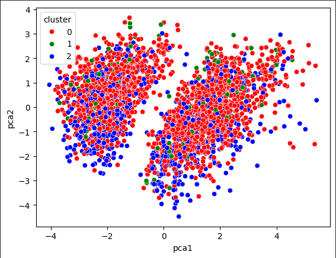

Análisis de Marketing con IA
IA Marketing
Home
Visualización
Análisis 1
Análisis 2
k-Means
Met Codo
Segmentación
PCA
Autoencoder
Clusters
Visualización de los Datos
Distribución de Tipos de Datos
Valores Nulos por Columna
Vista Previa de los Datos
QUANTITYORDERED
PRICEEACH
SALES
MONTH_ID
YEAR_ID
Análisis Exploratorio
Distribución por País
Línea de Producto
Tamaño de Trato
Tendencia de Ventas Mensuales
Matriz de Correlación
Relación entre Variables
Distribución de Ventas
Distribución de Cantidad Ordenada
K-Means
Diagrama Conceptual de K-Means
Método del Codo para K Óptimo
Método del Codo
Segmentación de Clientes con K-Means
Visualización de Clusters
Estadísticas por Cluster
Interpretación de los Clusters
PCA y Visualización 3D
Visualización 3D de Clusters
Varianza Explicada
Autoencoder
Diagrama de Autoencoder
TASK 10: Reducción de Dimensionalidad
Visualización del Clusters
